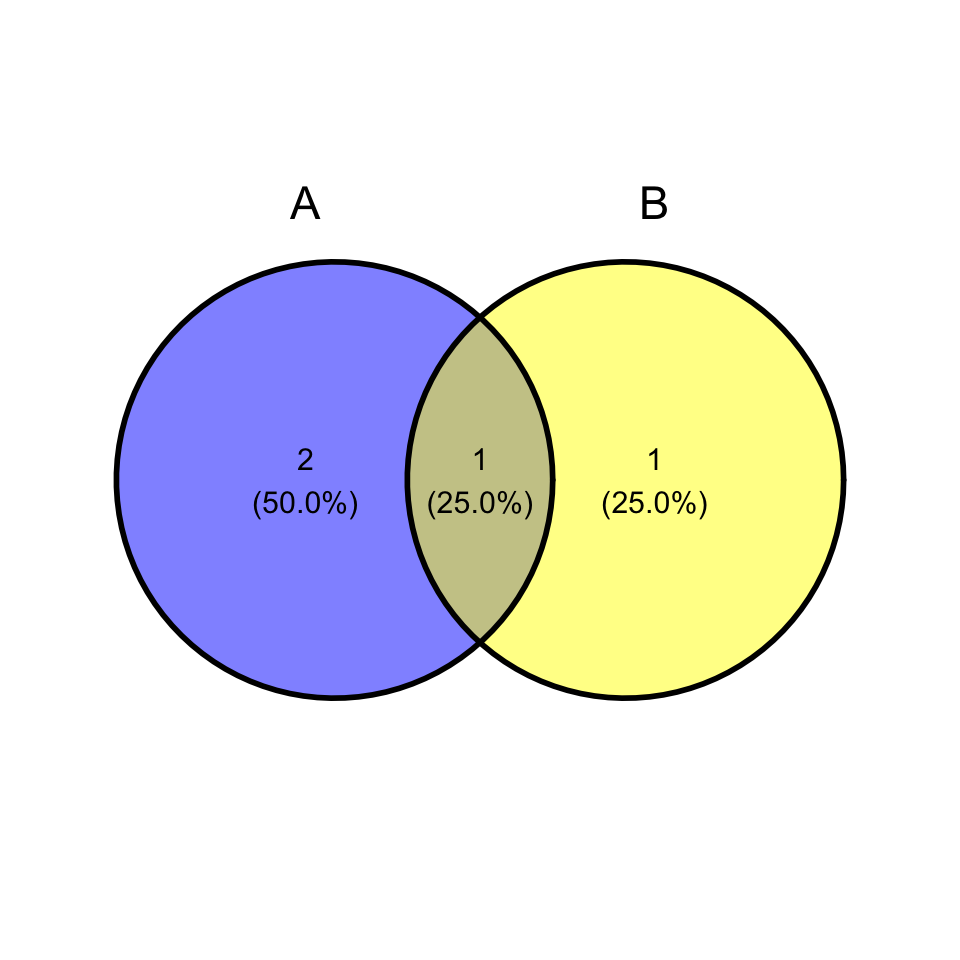
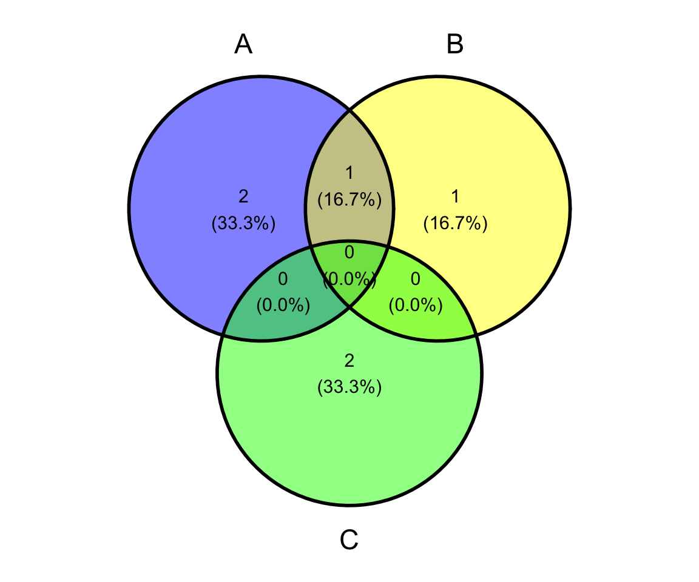
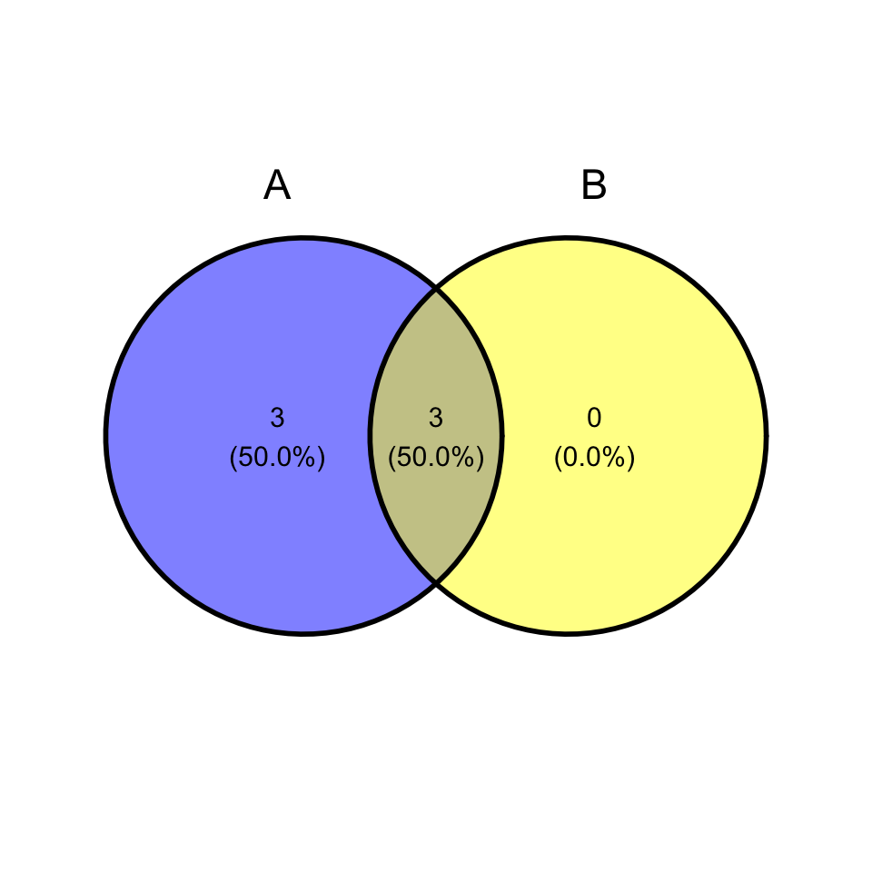

Chapter 2 Sets
Aims
- to introduce sets and basic operations on sets
Learning outcomes
- to be able to explain what a set is
- to be able to construct new sets from given sets using the basic set operations
- to be able to use Venn diagrams to shows all possible logical relations between two and three sets
2.1 Definitions
- set: a well-defined collection of distinct objects, e.g. \(S = \{2, 4, 6\}\)
- elements: the objects that make up the set are also known as elements of the set
- if \(x\) is an element of \(S\), we say that \(x\) belongs to \(S\) and write \(x \in S\) and if \(x\) is not an element of \(S\) we say that \(x\) does not belong to \(S\) and write \(x \notin S\)
- a set may contain finitely many or infinitely many elements
- subset, \(\subseteq\): if every element of set A is also in B, then A is said to be a subset of B, written as \(A \subseteq B\) and pronounced A is contained in B, e.g. \(A \subseteq B\), when \(A = \{2, 4, 6\}\) and $ = \(B = \{2, 4, 6, 8, 10\}\). Every set is a subset of itself.
- superset: for our outs \(A\) and \(B\) we can also say that \(B\) is a superset of \(A\) and write \(B \supset A\)
- cardinality: the number of elements within a set \(S\), denoted as \(|S|\)
- empty set, \(\emptyset\): is a unique set with no members, denoted by \(E = \emptyset\) or \(E = \{\}\). The empty set is a subset of every set.
2.2 Basic set operations
- union of two sets, \(\cup\) : two sets can be “added” together, the union of A and B, written as \(A \cup B\), e.g. \(\{1, 2\} \cup \{2, 3\} = \{1, 2, 3\}\) or \(\{1, 2, 3\} \cup \{1, 4, 5, 6\} = \{1, 2, 3, 4, 5, 6\}\)
- intersection of two sets, \(\cap\): a new set can be constructed by taking members of two sets that are “in common”, written as \(A \cap B\), e.g. \(\{1, 2, 3, 4, 5, 6\} \cap \{2, 3, 7\} = \{2, 3\}\) or \(\{1, 2, 3\} \cap \{7 \} = \{\emptyset \}\)
- complement of a set, \(A'\), \(A^c\): are the elements not in A
- difference of two sets, \(\setminus\): two sets can be “subtracted”, denoted by \(A \setminus B\), by taking all elements that are members of A but are not members of B, e.g. \(\{1, 2, 3, 4\} \setminus \{1, 3\} = \{2, 4\}\). This is also in other words a relative complement of A with respect to B.
- partition of a set: a partition of a set S is a set of nonempty subset of S, such that every element x in S is in exactly one of these subsets. That is, the subset are pairwise disjoint, meaning no two sets of the partition contain elements in common, and the union of all the subset of the partition is S, e.g. Set \(\{1, 2, 3\}\) has five partitions: i) \(\{1\}, \{2\}, \{3\}\), ii) \(\{1, 2\}, \{3\}\), iii) \(\{1,3\}, \{2\}\), iv) \(\{1\}, \{2, 3\}\) and v) \(\{1,2,3\}\)
2.3 Venn diagrams
Venn diagram is a diagram that shows all possible logical relations between a finite collection of different sets. A Venn diagram shows elements as points in the plane, and sets as regions inside closed curves. A Venn diagram consists of multiple overlapping closed curves, usually circles, each representing a set.
E.g. given \(A = \{1, 2, 5\}\) and \(B = \{1, 6\}\) Venn diagram of \(A\) and \(B\):

And given \(A = \{1, 2, 5\}\), \(B = \{1, 6\}\) and \(C= \{4, 7\}\) Venn diagram of \(A\), \(B\) and \(C\): 
And given \(A = \{1, 2, 3, 4, 5, 6\}\) and \(B= \{2, 4, 6\}\) Venn diagram of \(A\) and \(B\): 
2.4 Exercises: sets
Exercise 2.1 Given set \(S = \{1, 2, 3, 4, 5, 6\}\):
- what is the subset \(T\) of \(S\) consisting of its even elements?
- what is the complement \(T^c\)?
- what is the subset \(U\) of \(S\) containing of the prime numbers in \(S\)?
- what is the intersection \(T \cap U\)?
- what is the union of \(T \cup U\)?
- what is the set difference \(U \setminus T\)?
Exercise 2.2 Given set \[A = \{cat, elephant, dog, turtle, goldfish, hamster, parrot, tiger, guinea pig, lion\}\]
- what is the subset \(D\) of \(A\) consiting of domesticated animals?
- what is the subset \(C\) of \(A\) consiting of Felidae (cat) family?
- what is the intersection of \(D\) and \(C\)?
- what is the complement of \(D\), \(D^c\)?
- what is the union of \(D\) and \(C\)?
- what is the set difference of \(A \setminus C\)?
- can you draw Venn diagram showing relationship between \(D\) and \(C\)?
Answers to selected exercises (sets)
Exr. 2.1
- \(T = \{2, 4, 6\}\)
- \(T^c = \{1, 3, 5\}\), i.e. \(T^c\) contains all the elements of \(S\) not in \(T\)
- \(U = \{2, 3, 5\}\), the primes in \(S\)
- \(T \cap U = \{2\}\), common elements of \(T\) and \(U\), i.e. the even and prime numbers
- \(T \cup U = \{2, 3, 4, 5, 6\}\)
- \(U \setminus T = \{3, 5\}\), consisting of the elements of \(U\) that are not in \(T\)